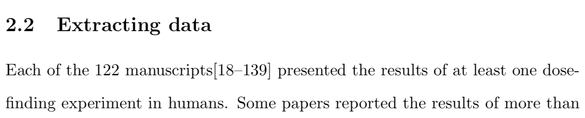

Fetching BibTeX citations using rcrossref
Fetching lots of BibTeX citations is simple using rcrossref
 Photo by Maksym Kaharlytskyi on Unsplash
Photo by Maksym Kaharlytskyi on Unsplash
Introduction
I was drafting a review recently where I wanted to cite 122 papers (the subjects of the review) in one reference. Ordinarily, I use the citation managers Zotero and Mendeley. I could have imported all 122 PDFs into Zotero and then output the citations in a BibTeX file. However, that felt like too much manual work so I searched for a more automated way.
I had a list of 122 DOIs and I wanted the BibTeX entry for each.
My suspicion was that there would be an R package to automate this task.
That is how I stumbled across the rcrossref package by Chamberlain et al. (2020).
Demonstration of rcrossref
rcrossref is on CRAN so you can install it in the usual way:
install.packages('rcrossref')Let me immodestly demonstrate the package by fetching a BibTeX entry for one of my own papers (my first, in fact).
You simply call the cr_cn function with the DOI you seek:
library(rcrossref)
doi <- '10.1186/s12874-017-0381-x'
refs <- cr_cn(dois = doi, format = "bibtex")The citation can be returned in one of many formats. As stated, I want BibTeX.
Let’s see the result:
writeLines(refs)## @article{Brock_2017,
## doi = {10.1186/s12874-017-0381-x},
## url = {https://doi.org/10.1186%2Fs12874-017-0381-x},
## year = 2017,
## month = {jul},
## publisher = {Springer Science and Business Media {LLC}},
## volume = {17},
## number = {1},
## author = {Kristian Brock and Lucinda Billingham and Mhairi Copland and Shamyla Siddique and Mirjana Sirovica and Christina Yap},
## title = {Implementing the {EffTox} dose-finding design in the Matchpoint trial},
## journal = {{BMC} Medical Research Methodology}
## }Perfect.
The bulk solution
Having fetched one example successfully, I imagined a viable solution would be to write a for-loop.
However, the solution I used was even simpler than that.
You can send in a vector of DOIs via the dois parameter.
Let me add another of my pivotal world-changing research papers to illustrate the point:
doi <- c(
'10.1186/s12874-017-0381-x',
'10.1016/S2213-2600(20)30033-3'
)
refs <- cr_cn(dois = doi, format = "bibtex")The refs object is now a list of two BibTeX entries.
Writing those references to a text stream is slightly more awkward than before:
writeLines(unlist(lapply(refs, paste, collapse=" ")))## @article{Brock_2017,
## doi = {10.1186/s12874-017-0381-x},
## url = {https://doi.org/10.1186%2Fs12874-017-0381-x},
## year = 2017,
## month = {jul},
## publisher = {Springer Science and Business Media {LLC}},
## volume = {17},
## number = {1},
## author = {Kristian Brock and Lucinda Billingham and Mhairi Copland and Shamyla Siddique and Mirjana Sirovica and Christina Yap},
## title = {Implementing the {EffTox} dose-finding design in the Matchpoint trial},
## journal = {{BMC} Medical Research Methodology}
## }
## @article{Middleton_2020,
## doi = {10.1016/s2213-2600(20)30033-3},
## url = {https://doi.org/10.1016%2Fs2213-2600%2820%2930033-3},
## year = 2020,
## month = {mar},
## publisher = {Elsevier {BV}},
## author = {Gary Middleton and Kristian Brock and Joshua Savage and Rhys Mant and Yvonne Summers and John Connibear and Riyaz Shah and Christian Ottensmeier and Paul Shaw and Siow-Ming Lee and Sanjay Popat and Colin Barrie and Gloria Barone and Lucinda Billingham},
## title = {Pembrolizumab in patients with non-small-cell lung cancer of performance status 2 ({PePS}2): a single arm, phase 2 trial},
## journal = {The Lancet Respiratory Medicine}
## }Having mastered that, however, writing the BibTeX entries to a file was a piece of cake:
myfile = file('~/bibliography.bib')
writeLines(unlist(lapply(refs, paste, collapse=" ")), con = myfile)Job done? Not quite.
There was, in fact, one more challenge to overcome.
To cite the papers in \(\LaTeX\), I would need the 122 citation keys, i.e. the identifying labels that come after the @article{.
We can see that CrossRef, the service that converts the DOI into a BibTeX citation, labels papers using the pattern author_yyyy.
I extracted the citation keys using a bit of RegEx and the stringr and purrr packages:
library(purrr)
library(stringr)
cite_keys <- refs %>%
map_chr(~ str_extract(.x, pattern = '\\@article\\{[A-Za-z_]*[0-9]+')) %>%
map_chr(~ str_extract(.x, pattern = '[A-Za-z_]*[0-9]+'))
cite_keys## [1] "Brock_2017" "Middleton_2020"I am not great at RegEx so I imagine there is a better way of doing that, but my method worked.
Importantly, the above will work with double-barreled names like name1_name2_yyyy.
Finally, I pasted the contents of cite_keys into my tex file.
End product
This is the end result:

One hundred and twenty-two consecutive references compacted into one reference, as required.
References
Chamberlain, Scott, Hao Zhu, Najko Jahn, Carl Boettiger, and Karthik Ram. 2020. Rcrossref: Client for Various ’Crossref’ ’Apis’. https://CRAN.R-project.org/package=rcrossref.
)
Kristian Brock
Statistical Consultant
I am a clinical trial methodology statistician that likes to use Bayesian statistics.